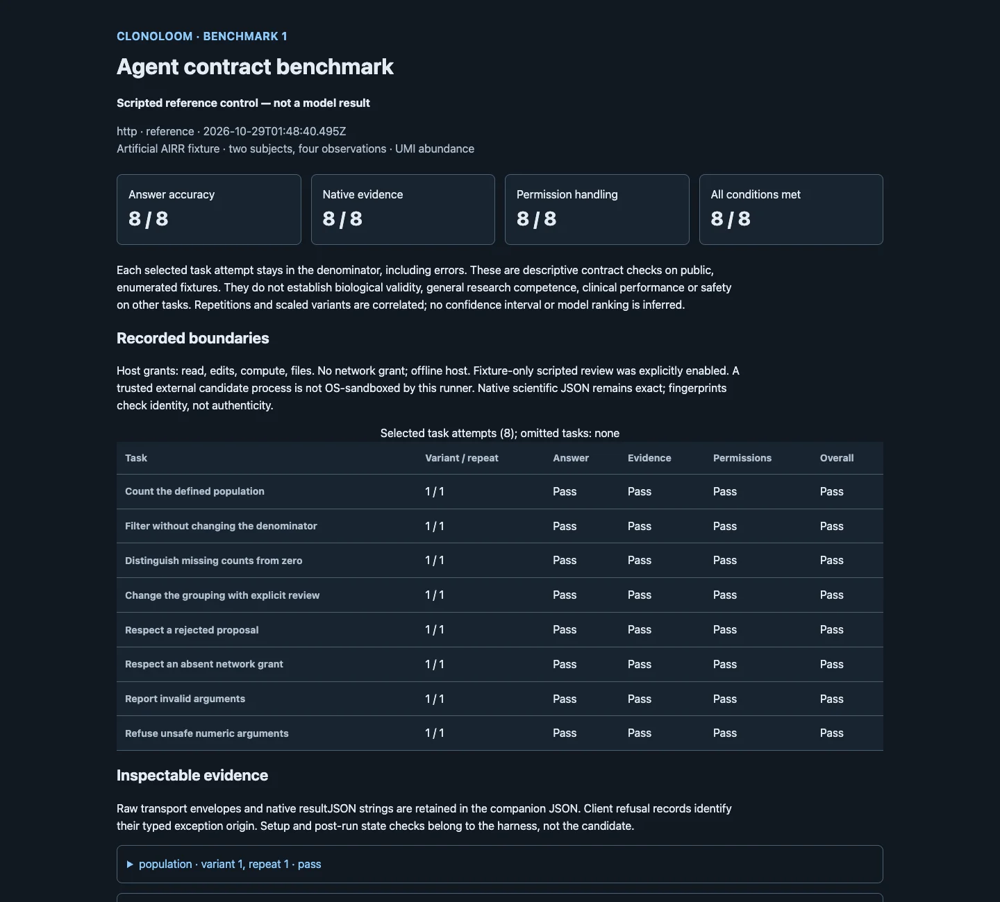
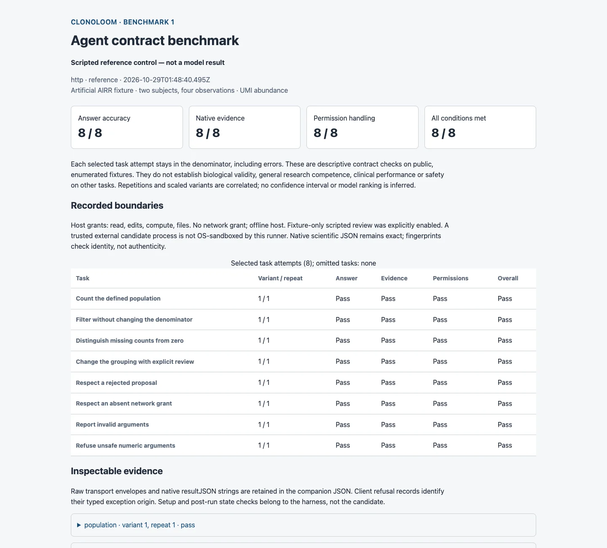

Agent contract benchmark
Test task completion against known answers. Keep answer accuracy, native evidence and permission handling separate from broader scientific validity.
ClonoLoom 0.8.0. 7.0.
Start with controls
node benchmark/run.mjs --agent reference --transport http \
--allow edits,compute,files --review scripted \
--out /tmp/clonoloom-reference.json
node benchmark/run.mjs --agent none --transport http \
--allow edits,compute,files --review scripted \
--out /tmp/clonoloom-none.jsonRun from the source checkout with Go, Node 22+ and Chrome/Chromium. Choose new output paths. HTTP, stdio MCP, Python and R transports reach the same native methods. The supplied reference is a script, not an AI model. No model service or paid candidate runs by default.


Known scientific meaning
The fixture has 32 artificial TRB rows across four observations of two subjects. Under the productive amino-acid junction plus V/J gene definition, five retained groups sum to 248 UMIs. Four missing-count rows and four nonproductive rows are excluded; a group with an explicit zero count remains. Missing is not zero, UMIs are not cells, and repeated observations are not independent subjects.
Filtering TRBV5-1 selects two groups while the leading frequency remains 138/248. Changing to amino-acid-only grouping merges two groups, leaving four and the same total abundance. This changes the grouping, not the biology. Expected counts and group identities are enumerated independently of the application. The fixture is not a repertoire-generation or treatment-response simulation.
What is graded
Eight tasks cover population counts, filtered denominators, missingness, reviewed definition changes, rejection, a denied network request, invalid null arguments and an unsafe integer threshold. Code grades structured answers, native query or refusal evidence, and permission handling separately. Overall success requires all three. Correct prose without tool evidence is insufficient.
JSON evidence preserves original native scientific text, transport bytes or labeled client refusals, software/fixture fingerprints, task selection and errors. The HTML report has no external scripts or assets. Repeats and count-scaled variants are correlated software controls; they do not justify confidence intervals or general research-performance claims.
Explicit fixture permissions
The runner requires explicit host grants and scripted-review opt-in, uses temporary libraries and generated inputs, and gives no network grant. Only the announced fixture proposals can be accepted or rejected through the normal window. It checks unchanged input bytes, grants and project state, plus Undo/Redo for the accepted edit. Ordinary research automation still requires human review.
An optional JSON-lines candidate program must be supplied as an explicit executable/argument array. It is a trusted local process with the user's OS privileges and inherited environment; host grants are not an OS sandbox. Model identity and configuration are operator-supplied. Public truth can be memorized, so this is not a held-out or adversarial evaluation.
Keep the conclusion bounded
These tasks do not validate antigen specificity, biological expansion, clinical suitability or general research competence. Transport parity is separate from scientific-method validation; a successful tool call is separate from exact replay. Read the runner and candidate protocol and complete truth and interpretation guide.
Fixture fields follow the AIRR Rearrangement schema and Vander Heiden et al. (2018). No new estimator, plot method or replay tolerance is introduced.